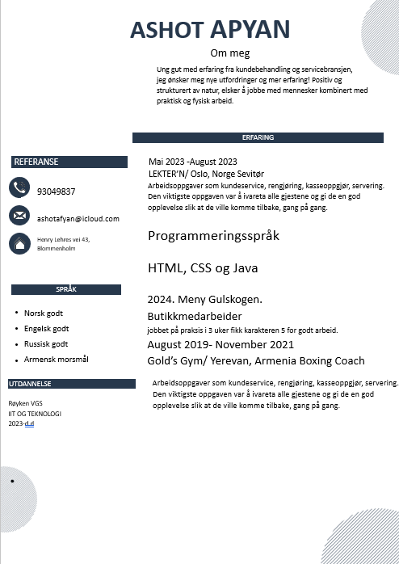
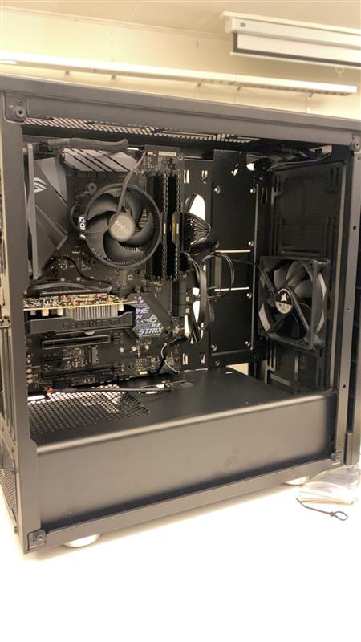
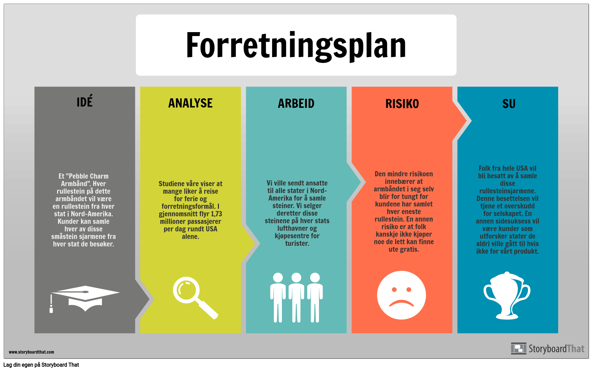
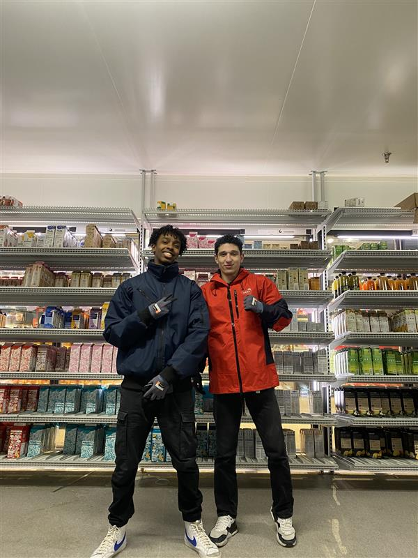

Hjem
Velkommen til min læringsreise i YFF fag. Her vil jeg dele det jeg har lært i klassen, inkludert hvordan man lager en CV og søknad, søker jobb, forbereder seg til intervju, bygger en PC, lager en forretningsplan og min praksisopplevelse hos Meny Gullskogen Drammen.
Lærer: Serdar Durmus og Henrik Gustavsen
CV og Søknad
Jeg lærte hvordan man lager en profesjonell CV og søknad. Dette er viktig for å presentere seg selv til potensielle arbeidsgivere.
Jobbsøking og Intervju
Jeg lærte hvordan man søker etter jobber og forbereder seg til jobbintervjuer. Her er noen tips jeg lærte:
- Bruk jobbsøkemotorer og nettverk for å finne jobbmuligheter.
- Forbered deg godt før intervjuet ved å øve på vanlige intervjuspørsmål.
- Vær punktlig og kledd passende for intervjuet.
PC Bygging
Jeg lærte hvordan man bygger en PC i klassen. Dette inkluderte å velge riktige komponenter og sette dem sammen.
Forretningsplan
Jeg lærte hvordan man lager en forretningsplan og presenterer en forretningsidé. Dette inkluderte å analysere markedet og utarbeide en strategi.
Praksis på Meny Gullskogen Drammen
I uke 10, 11 og 12 hadde jeg praksis hos Meny Gullskogen Drammen som butikkmedarbeider. Jeg fikk karakter 5 for min innsats.
Lærere

Serdar Durmus
Telefon: +47 474 60 787
Henrik Gustavsen
Telefon: +47 457 08 394